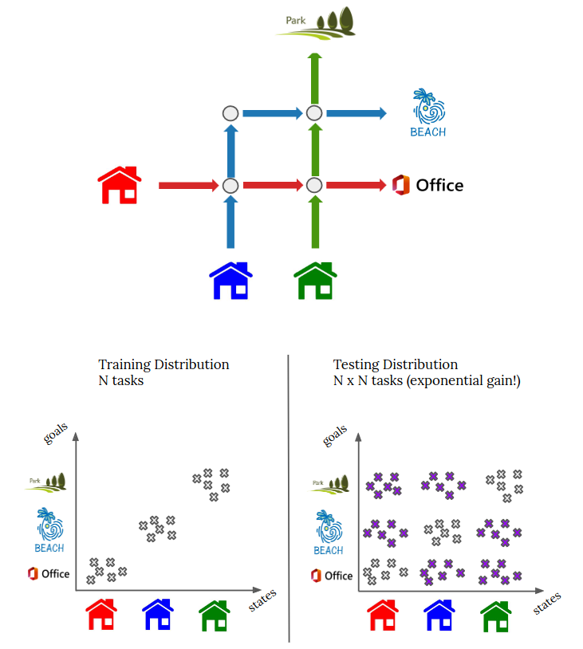
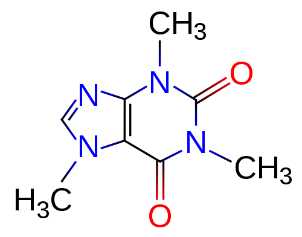

|
Raj Ghugare
Google Scholar /
Github /
Twitter
rg9360@princeton.edu
I am a PhD student at Princeton, advised by Ben Eysenbach.
Previously, I spent two years at Mila. I completed my bachelors from NIT Nagpur.
Broadly, my research goal is to develop simpler and scalable sequential decision making algorithms. I am interested in machine learning and reinforcement learning algorithms.
I enjoy working on a wide range of topics, some keywords
- Long horizon inference using
- contrastive and non-contrastive representations
- generative models
- Characteristics of intelligent reasoning
- combinatorial / compositional generalization
- dynamic programming
- abstractions.
I support the idea of open science and make my work open source.
|

|
|
Research
Please refer google scholar
for a complete list of my publications.
|
|

|
Closing the Gap between TD Learning and Supervised Learning -- A Generalisation Point of View [ICLR 2024]
Raj Ghugare,
Matthieu Geist,
Glen Berseth,
Benjamin Eysenbach
paper,
code
What if I told you that there were a combinatorial number of solvable tasks that Decision Transformers like methods overlook?
Our paper unwraps this by linking trajectory stitching to combinatorial generalization. Although stitching is mostly associated with dynamic programming, we show that significant progress (up to 10x) can be made using much simpler techniques.
|
|

|
Searching for High-Value Molecules Using Reinforcement Learning and Transformers [ICLR 2024]
Raj Ghugare,
Santiago Miret,
Adriana Hugessen,
Mariano Phielipp,
Glen Berseth
project page,
paper,
code
Through extensive experiments spanning across datasets with 100 million molecules and 25+ reward functions, we uncover essential algorithmic choices for
efficient search with RL, and other phenomena like reward hacking of protien docking scores.
|
|
|
Simplifying Model-based RL: Learning Representations, Latent-space Models and Policies with One Objective [ICLR 2023]
Raj Ghugare,
Homanga Bharadhwaj,
Benjamin Eysenbach,
Sergey Levine,
Ruslan Salakhutdinov
project page,
paper,
code
We present a joint objective for latent space model based RL which lower bounds the RL objective.
Maximising this bound jointly with the encoder, model, and the policy boosts sample efficiency, without using
techniques like ensembles of Q-networks and a high replay ratio.
|
The code for this website was directly ported from Jon Barron.
|
|